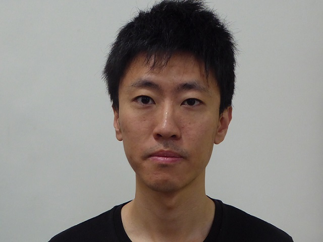
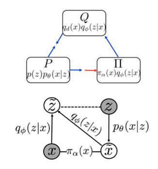
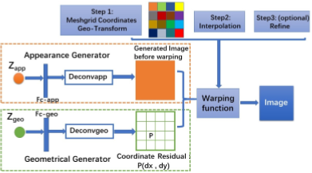
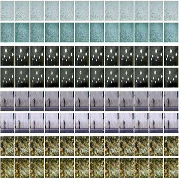
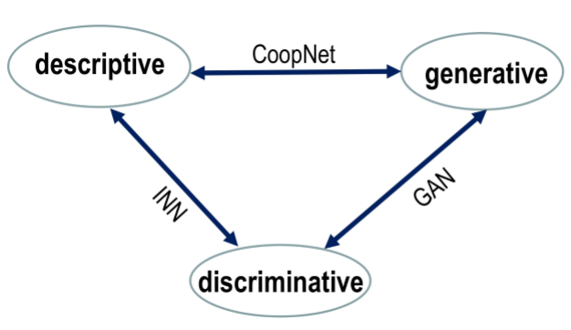
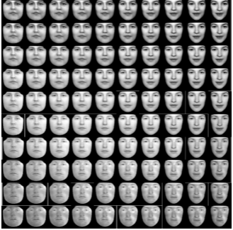
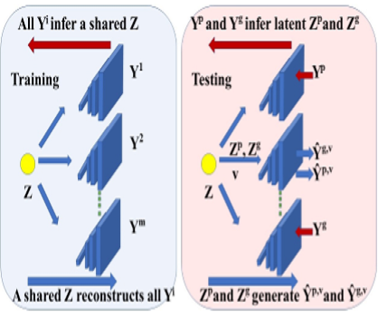
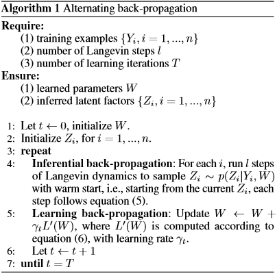
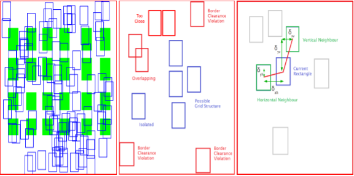
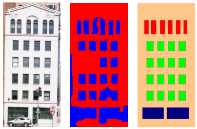

|

|
I am currently a fifth year Ph.D student at the Department of Statistics of UCLA. During year 2010-2013, I studied Computer Science as a Mphil. student in HKUST, working with Prof. Chiew-Lan Tai (Advisor), and Prof. Long Quan.
Before joining HKUST, I received my B.sc. degree from Department of Mathematics, Hefei University of Technology in June, 2010.
Research Interest
Machine Learning: Unsupervised learning, Semi-supervised learning, Multi-modality learning.
Statistical Models: Generative modelling, Sparse and low-rank modelling
Computer Vision: Video analysis, Image/Video completion, generation and prediction.
Artificial Intelligence:Explainable model, Disentangle representation
Contact
Email: hantian@ucla.edu, hthth0801@gmail.com
|
|
Publications
|

|
Divergence Triangle for Joint Training of Generator Model, Energy-based Model, and Inference Model
Tian Han*,
Erik Nijkamp*,
Xiaolin Fang,
Mitch Hill,
Song-Chun Zhu,
Ying Nian Wu
IEEE Conference on Computer Vision and Pattern Recognition (CVPR) 2019
Arxiv
Proposes a framework, namely divergence triangle, for joint training of generator model, energy-based model and inference model.
The divergence triangle seamlessly integrates maximum likelihood learning, variational learning, adversarial learning, wake-sleep algorithm, and contrastive divergence in a unified probabilistic formulation.
|
|

|
Unsupervised Disentangling of Appearance and Geometry by Deformable Generator Network
Xianglei Xing,
Tian Han,
Ruiqi Gao,
Song-Chun Zhu,
Ying Nian Wu
IEEE Conference on Computer Vision and Pattern Recognition (CVPR) 2019
Paper upload upon request
The extended version of our previous ICML workshop paper. The proposed deformable generator
model is agnostic to different learning algorithms. We learn the model using ABP as well as
VAE. The model can be effective in separating shape and appearance information.
|
|

|
Learning Generator Networks for Dynamic Patterns
Tian Han,
Lu Yang,
Jiawen Wu,
Xianglei Xing,
Ying Nian Wu
IEEE Winter Conf. on Applications of Computer Vision (WACV) 2019
Paper /
Project
Propose to learn spatial-temporal generator network under different spatial/temporal stationary conditions for dynamic patterns
using ABP algorithm. The proposed algorithm can be further improved by using learned initialization which is useful for the recovery tasks. We
evaluate the model in generation, video recovery, incomplete video learning as well as multi-modality learning scenarios.
|

|
A Tale of Three Probabilistic Families: Discriminative, Descriptive and Generative Models
Yingnian Wu,
Ruiqi Gao,
Tian Han,
Song-Chun Zhu
Quarterly of Applied Mathematics 2018
Paper
Discuss and analysis three probablistic families including discriminative, descriptive and
generative models.
|
|
Deformable Generator Network: Unsupervised Disentanglement of Appearance and Geometry
Xianglei Xing,
Ruiqi Gao,
Tian Han,
Song-Chun Zhu,
Ying Nian Wu
Thirty-fifth International Conference on Machine Learning (ICML workshop) 2018
Paper
Propose a deformable generator model where we use one generator for appearance and
one generator for geometry offset. Such generators are trained using ABP algorithm.
|

|
Replicating Active Appearance Model by Generator Network
Tian Han,
Jiawen Wu,
Ying Nian Wu
27th International Joint Conferences on Artificial Intelligence (IJCAI) 2018
Paper
We study the linear relationship between the latent code leaerned by generator network and the AAM code that generates the face stimuli. We show the latent codes by generator network can be separated into shape and appearance parts,
and generator network is capable to replicate the AAM model. A step toward explaining the learned generative model.
|

|
Learning Multi-view Generator Network for Shared Representation
Tian Han*,
Xianglei Xing*,
Ying Nian Wu
24th International Conference on Pattern Recognition (ICPR) 2018
Paper
Propose to solve the multi-view problem by using generator models through shared latent factors. We
train such model by shared ABP algorithm. The proposed algorithm is effective in both image generation and recognition.
|
|

|
Alternating Back-Propagation for Generator Network
Tian Han*,
Lu Yang*,
Song-Chun Zhu,
Ying Nian Wu
Thirty-First AAAI Conference on Artificial Intelligence (AAAI) 2017
Paper /
Project
Propose a simple yet efficient algorithm to train deep generative model, i.e., generator network. The proposed alternating back-propagation algorithm (ABP) shows superior or comparable performance in terms of completion and generation. ABP can be treated as
an alternative training method as GAN, VAE and auto-regressive models.
|
|

|
Quasi-regular Facade Structure Extraction
Tian Han,
Chun Liu,
Chiew Lan Tai,
Long Quan
11th Asian Conference on Computer Vision (ACCV) 2012
Paper
Propose a two-stage framework to extract quasi-regular structure, i.e., repetitive grid structure, from
facade images. We first use a novel marked point process (MPP) to do object level architectural elements modeling,
then regularize the obtained feature map based on low-rank constraint. It's the first work to use MPP for architectural
image modeling.
|
|

|
Parsing façade with rank-one approximation
Chao Yang,
Tian Han,
Chiew Lan Tai,
Long Quan
2012 IEEE Conference on Computer Vision and Pattern Recognition (CVPR) 2012
Paper
Propose to parse facade using rank-one and sparse matrix decomposition.
The proposed rank-one block-wise parsing can give accurate facade detection and segmentation, and
shows superior robustness and efficiency.
|
|